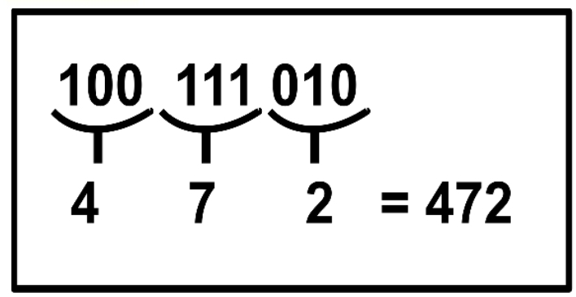
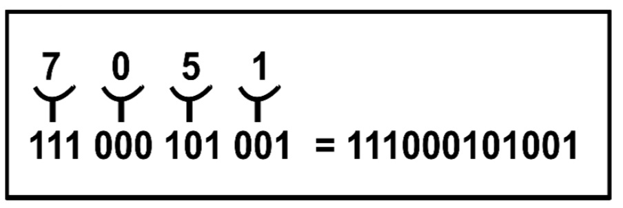

NÚMEROS OCTAIS
O sistema de numeração octal possui base oito, ou seja, é composto por dois oito dígitos, sendo eles: 0, 1, 2, 3, 4, 5, 6, 7. Igual nos números binários, os octais têm o mesmo valor nos números que fazem parte da base, pulando os números que não fazem parte.Continua sendo uma sequência, mas utilizando apenas os números de 0 à 7.
Exemplo:
BASE 10 PARA A BASE 8
Para a conversão da base 10 para a base 8, é necessário fazer várias divisões.
Dividindo o número, por 8 e guardando o resto.
Após, dividindo o quociente por 8 e guardar novamente o resto.
Irá repetir isso até o quociente ser menor ou igual a 7.
O número no sistema octal será o quociente da última divisão e todos os restos, da direita para a esquerda.
BASE 2 PARA A BASE 8
A conversão da base 2 para a base 8 pode ser feita utilizando uma espécie de régua, como a do exemplo abaixo.
Primeiramente você irá separar os números binários de três em três, depois, comparar com os números da régua.
Exemplo:

BASE 8 PARA A BASE 2
Para a conversão da base 8 para a base 2, será feito o processo inverso ao da base 2 para a base 8. Utilizando a mesma régua, você irá comparar o número em octal e verificar qual seria em binário e substituir.
Exemplo:
